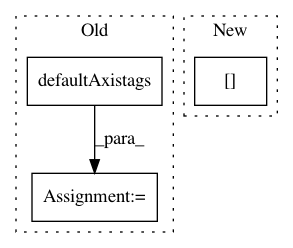

8a7c79adfd36ce229b846669412c52e69ec2e674,lazyflow/operators/classifierOperators.py,OpSegmentation,setupOutputs,#OpSegmentation#,311
Before Change
newtags = []
for i in range(len(inputSlot.meta.shape) - 1):
newtags.append(tags[i].key)
newtags = vigra.defaultAxistags("".join(newtags))
self.outputs["Output"].meta.axistags = newtags
def execute(self, slot, subindex, roi, result):
After Change
def setupOutputs(self):
inputSlot = self.inputs["Input"]
self.outputs["Output"].meta.shape = inputSlot.meta.shape[:-1] + (1,)
self.outputs["Output"].meta.dtype = inputSlot.meta.dtype
self.outputs["Output"].meta.axistags = inputSlot.meta.axistags
In pattern: SUPERPATTERN
Frequency: 4
Non-data size: 3
Instances
Project Name: ilastik/ilastik
Commit Name: 8a7c79adfd36ce229b846669412c52e69ec2e674
Time: 2013-02-12
Author: kemal.eren@iwr.uni-heidelberg.de
File Name: lazyflow/operators/classifierOperators.py
Class Name: OpSegmentation
Method Name: setupOutputs
Project Name: ilastik/ilastik
Commit Name: 97667a983d6f35b0d3cb90262edf89669b78666b
Time: 2013-03-19
Author: bergs@janelia.hhmi.org
File Name: lazyflow/utility/io/blockwiseFileset.py
Class Name: BlockwiseFileset
Method Name: exportRoiToHdf5
Project Name: ilastik/ilastik
Commit Name: 8d9892db78fb01d2f5b81102756a5bc7ab6ef957
Time: 2018-04-25
Author: jonas.massa@iwr.uni-heidelberg.de
File Name: ilastik/applets/networkClassification/nnClassGui.py
Class Name: NNClassGui
Method Name: pred_nn
Project Name: ilastik/ilastik
Commit Name: bd99a5410be8f4b51c664ccf6df9b1990e8588e8
Time: 2014-04-14
Author: webmaster@burgerdev.de
File Name: ilastik/applets/thresholdTwoLevels/_OpGraphCut.py
Class Name: OpGraphCut
Method Name: setupOutputs